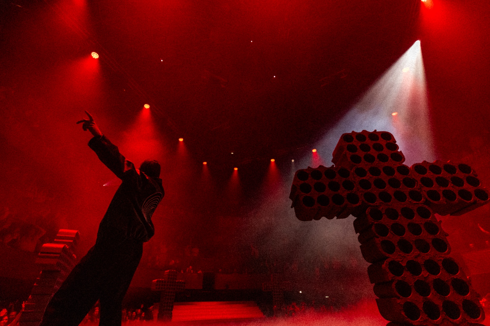
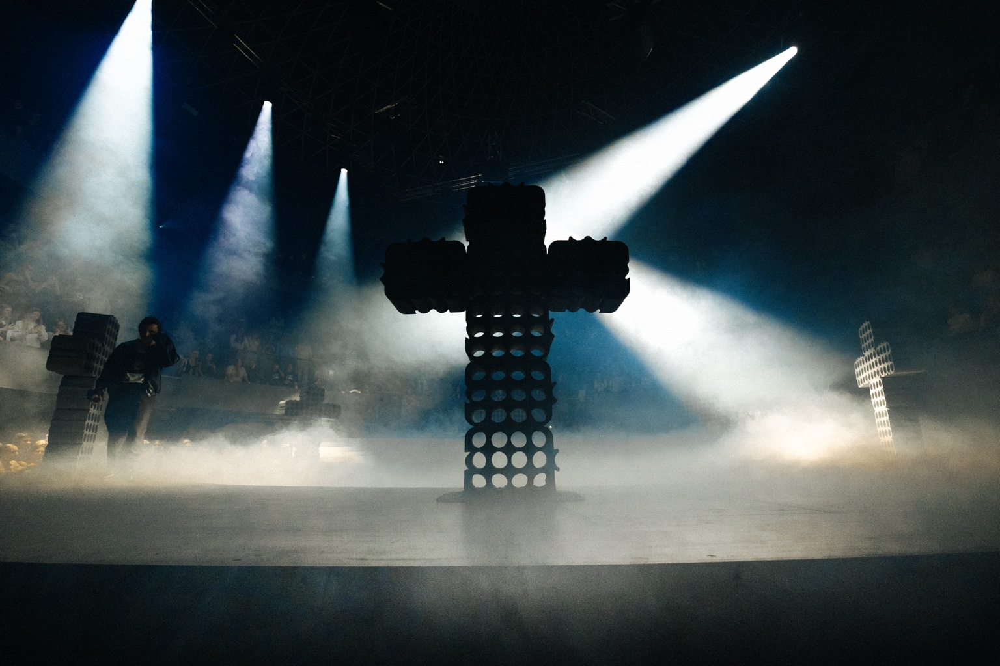
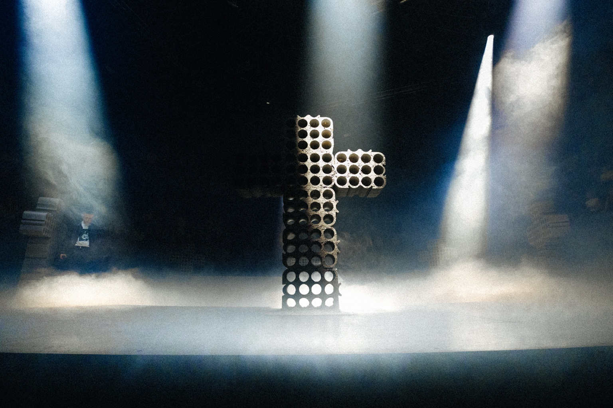
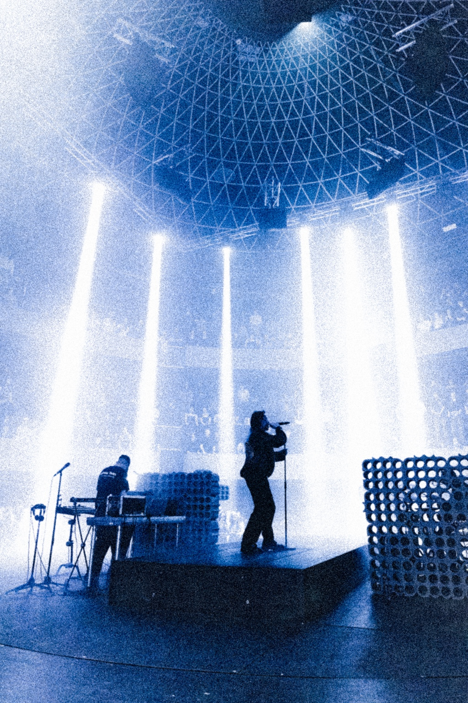
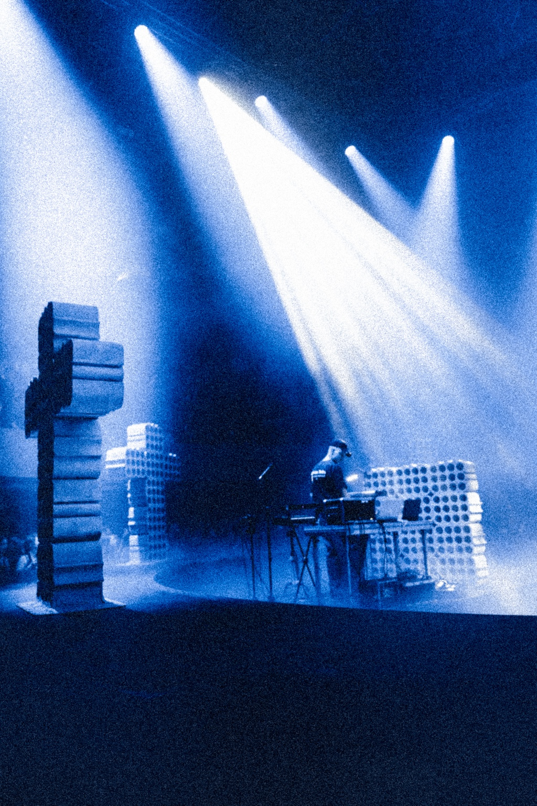
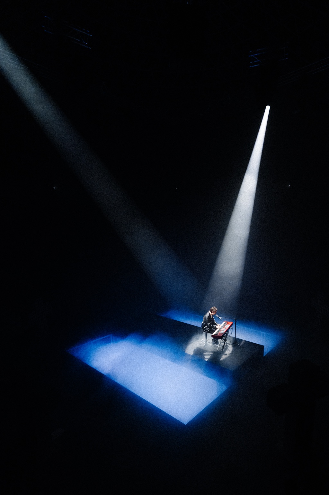
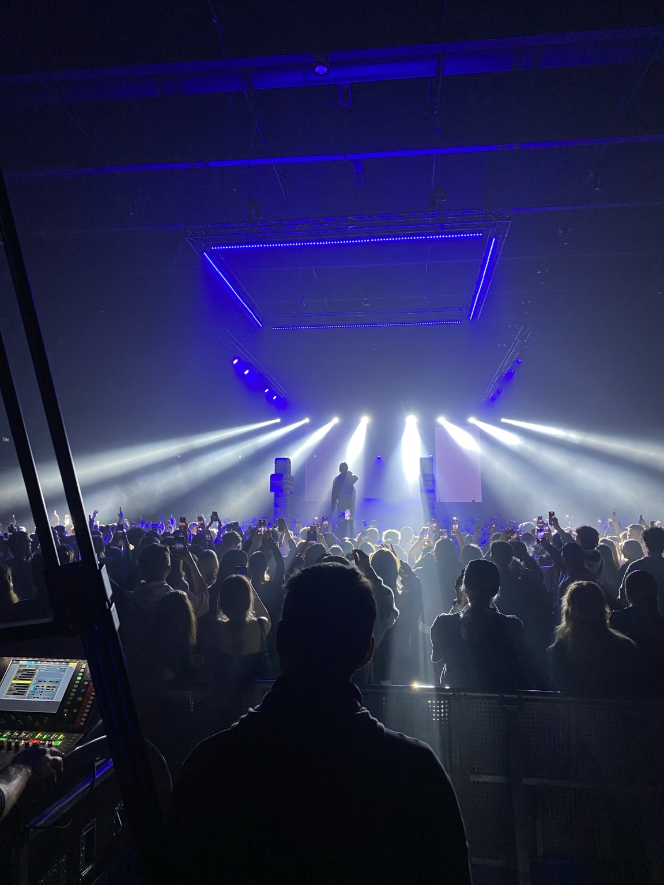
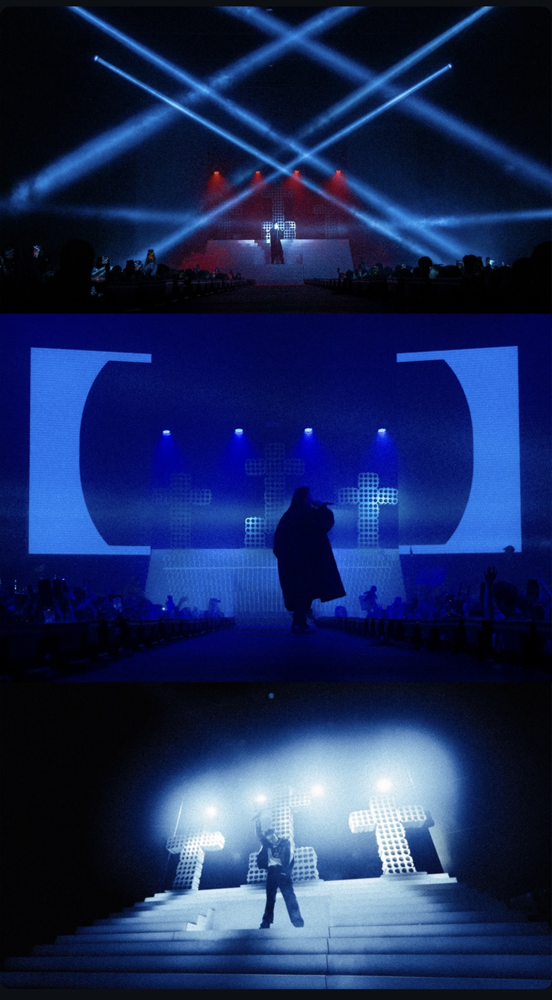
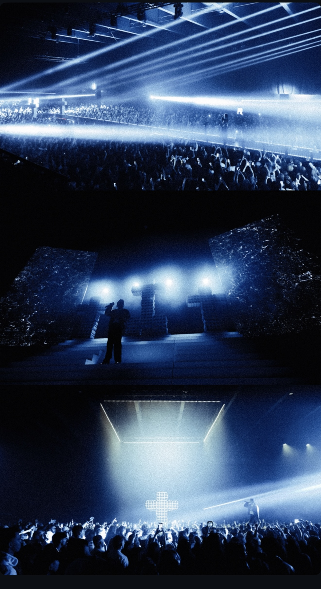
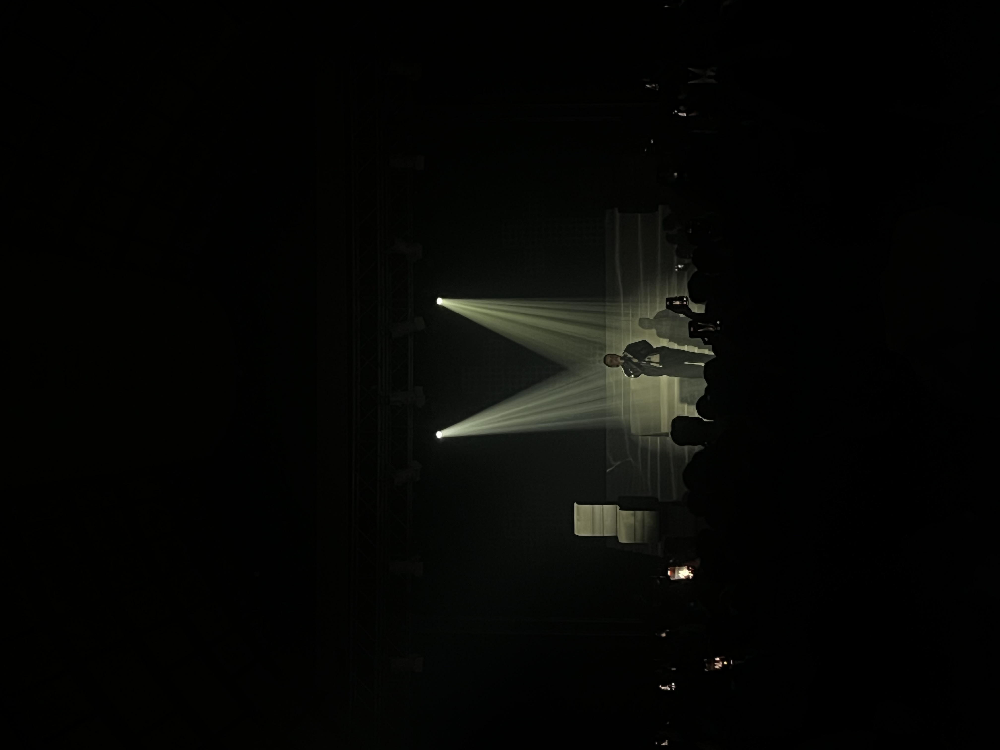

Svetlo ako
scénografia.
Pre S.A.M.O. Tour 2025 som vytvoril svetelný dizajn postavený na výraznej scénografii krížov a na kontraste medzi intímnymi a monumentálnymi momentmi koncertu. Surovú červenú, studenú modrú a ostrú bielu som striedal s úplnou tmou, aby mal každý svetelný obraz vlastnú váhu.
ROLALight design · Programming · Live show
CONSOLEChamSys MQ70 Compact
ROK2025









Fotografie © Daniel Gavenda